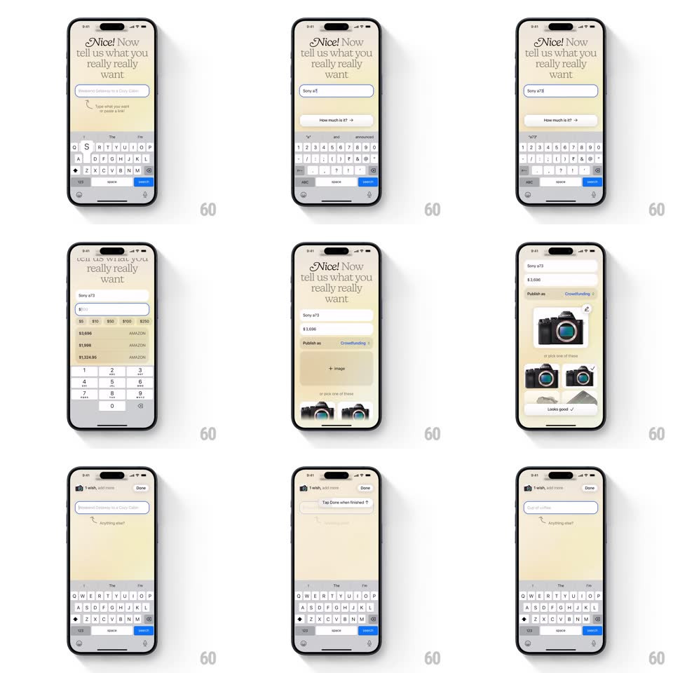

Media
Frame-by-frame

Rebuild this interaction 1:1: Spoil Me's wish creation flow - a warm, editorial multi-step sheet where each answer morphs the input into the next question, ending in a staggered photo grid pick.

Rebuild this interaction 1:1: Spoil Me's wish creation flow - a warm, editorial multi-step sheet where each answer morphs the input into the next question, ending in a staggered photo grid pick.
## Integration
Integration: stack-agnostic spec - springs given as stiffness/damping, timed motions as duration + curve; map every value to your framework and animation library of choice.
## Scene
A cream sheet: serif headline "Nice! Now tell us what you really really want" ("Nice!" in italic), a pill text input, and a hint. Steps: name the wish (keyboard), price it (numeric keypad + quick-amount chips $5-$250), publish-as choice (Private / Crowdfunding), then a photo grid (camera product shots) with a "Looks good" confirm. Top bar shows "1 wish, add more" and Done.
## Motion spec
Pattern: morphing input steps.
- Each answer commits with return/continue: the input pill's text lifts out of the pill and settles as a summary line above (translateY -24px + scale 0.9, 300ms), while the pill clears and morphs its placeholder to the next question (crossfade 200ms) - the pill itself never jumps position.
- The "How much is it?" secondary pill slides in from beneath the main input (translateY 20px + fade, 250ms) once the name is set.
- The keypad swap: alpha keyboard slides down as the numeric pad slides up (250ms, matched) and the quick-amount chips stagger in (scale 0.8 to 1, spring ~420/20, 40ms apart).
- Publish-as toggle slides its pill highlight (200ms spring).
- Photo step: the grid images load staggered (fade + scale 0.92 to 1, 250ms, 60ms apart, row by row); tapping one checks it (badge scales in, spring ~400/18) and lifts it (shadow deepens, 150ms).
- "Looks good" confirms with a checkmark draw (stroke-dash, 300ms) and the sheet settles to the wishes list.
## Calibration
- One question owns the screen at a time; answered steps collapse into compact summary lines.
- The headline stays pinned; only the input region reconfigures.
## Reduced motion
Steps crossfade; grid appears without stagger.
## Don't miss
- The cream background and serif type are the whole brand - no saturated buttons; the confirm is black text with a drawn check.
- The keyboard is part of the choreography: inputs stay above it at all times.